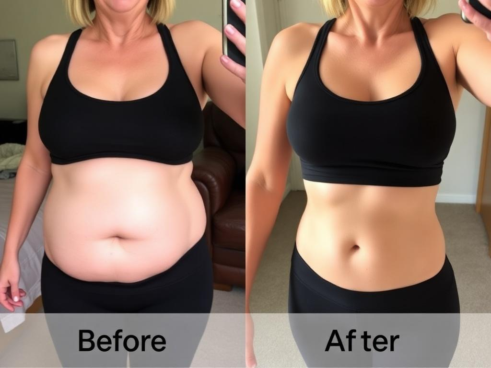
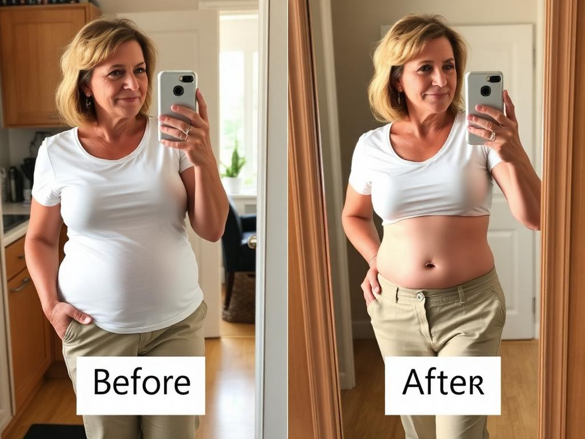
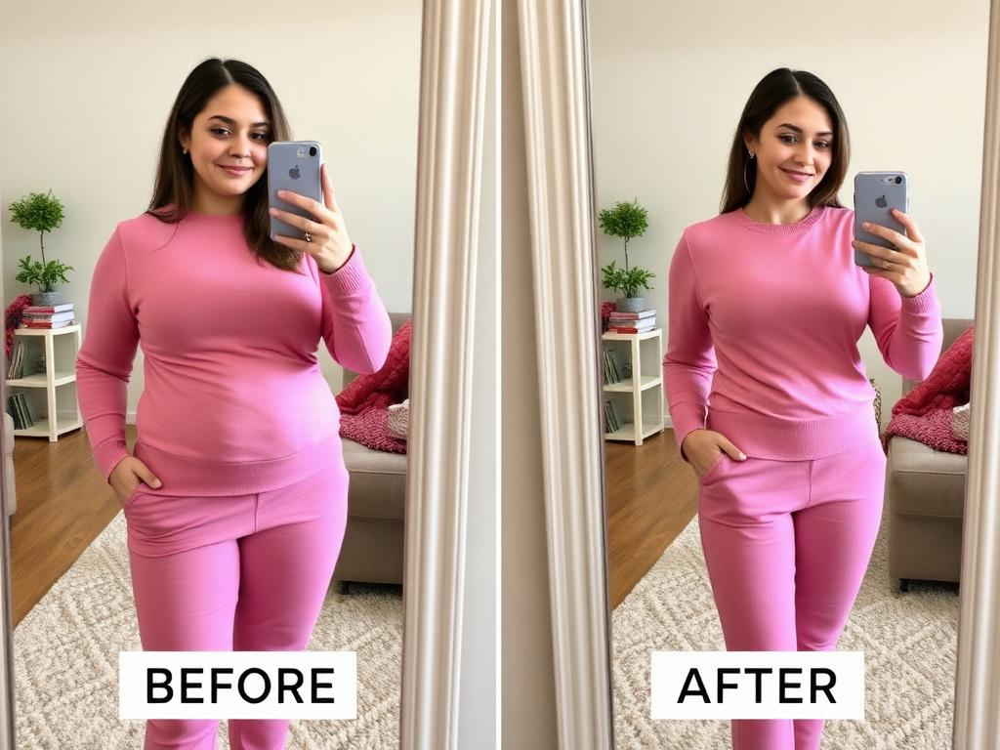

Vila Saengsavang
Hope Browne the bloating cleared up so well, took two months and did get worse before it got better. We are very happy about it 🙏
3d247
Hope Browne
Oh wow that's amazing!! How many bottles did you do?
2d14
The daily ritual that clears gut biofilm, debloats, and wakes your metabolism back up — in days, not months.
"The cleanest gut-balancing formula I've recommended in years. Most patients see real results after 3+ weeks — consistency is key."
Most women feel less bloated within 5–7 days. Bigger shifts happen between weeks 2 and 4.
Yes. 100% natural, vegan, gluten-free, 3rd-party tested in an FDA-registered facility.
60-day money-back guarantee. Email us and we refund you — no need to send anything back.
Absolutely. Skip, pause or cancel from your account in 1 click. No phone calls.
Unfiltered comments pulled straight from our private Facebook community.
Hope Browne the bloating cleared up so well, took two months and did get worse before it got better. We are very happy about it 🙏
Oh wow that's amazing!! How many bottles did you do?
Lauren Tate okay you HAVE to try this. 8 weeks and my menopause belly is finally going down. I haven't seen my waist in 4 years 🥲

Wait WHAT. Ordering tonight. Did you change diet too?
Stephanie K before & after… 6 weeks. I'm not unbuttoning my jeans after lunch anymore. that alone is worth it 😭
the post-lunch unbutton was my villain origin story 😂😂
Patricia remember when I said nothing would ever work for menopause weight? I was wrong. 3 months in. down 14 lbs and zero bloat 🙌

I literally just ordered yesterday because of YOU. praying 🙏
Mom Mom! the postpartum belly is finally going down. 5 weeks. mom belly pooch is genuinely shrinking 💕 thank you for telling me about this

OH MY GOD honey you look so good. so proud of you ❤️❤️❤️
Sarah J. the morning puffiness is GONE. like… gone gone. I wake up looking like myself again. my rings even fit 🥹
ok the rings fitting got me. that's how I know it's real
Em EM these are the same jeans!!! I cried in the dressing room. 7 weeks. don't gatekeep this stuff anymore lol
STOP IT 😭 sending the link to my sister rn
the girls I'm 70 years old and I'm telling you it works. 8 weeks. flat stomach. energy is back. my doctor asked me what I was doing 😌
Marie you are an INSPIRATION. love seeing this 🙌
If you checked even one of these — your gut biofilm is the root cause.
A sticky protein layer coats your gut wall, blocking absorption and trapping water, waste & fat around your midsection. Dissolve it and every symptom above starts reversing.
Unfiltered words from women who finally found something that worked.
Testimonials featured may include individuals who have received compensation, free product, or other incentives.
When the gut resets, everything else follows. Here's what 3M+ women reported beyond a flatter belly.
Based on consumer self-reported outcomes, N=2,847 women, 90 days of daily use.
Real numbers from a 12-week consumer study on our exact formula.
woke up with less puffiness and swelling
reported a flatter, lighter belly within 3 weeks
stopped reaching for afternoon sugar fixes
fell asleep faster and slept deeper through the night
Based on independent consumer perception studies on N=312 women, 12 weeks of daily use.
They treat symptoms. We clear the biofilm. See the difference, side by side.
That's why nothing else worked. Without clearing the biofilm first, every other supplement gets blocked at the gut wall — wasted before it reaches your bloodstream.
4.7 · 109,613 Reviews
My wedding ring went from a size 8 down to a 6.5 in about 7 weeks. I literally couldn't slide it off for years and now it spins on my finger. Wasn't even my main goal — I just wanted less bloating — but this was the proof for me.
My ankles used to be so swollen by 6pm that my socks left deep marks and my sneakers felt two sizes too small. After about 4 weeks the puffiness is genuinely gone. I can wear my ankle boots again without pain.
I bought a pair of size 12 jeans 18 months ago that never zipped — kept them as 'motivation'. 9 weeks on this and they zip, button, and I can sit down comfortably. Didn't change my diet. I cried a little in the closet.
Amazing! I was so skeptical after trying so many gut products that did nothing. Within 3 weeks my bloating was gone and I had energy again. I'm 54 and finally feel like myself.
I've tried probiotics, cleanses, you name it. This is the first thing that actually addressed the bloating long-term. 6 weeks in and my stomach is flat for the first time in years. Will absolutely reorder.
Did not expect much honestly. By week 2 my afternoon bloat was gone. By week 5 I lost 8 lbs without changing anything else. My doctor asked what I changed.
Really good results overall. Took about 3 weeks to notice changes but the bloating reduction is real. Knocking off one star because the shipping took longer than expected.
55 years old. Menopause wrecked my metabolism. This is the only thing that's helped me feel less puffy and inflamed. I take it every morning with water.
I bought 3 bottles because of the discount and I'm SO glad I did. My sister tried mine and ordered her own. We both feel lighter, less brain fog, and my pants fit again.
Works as described. The first week I had some bathroom changes (warned about it) but after that everything settled and the results started showing. Happy customer.
A clear, week-by-week map of what's happening inside your body — and what you'll feel.
Your body begins breaking down the gut biofilm. Bromelain dissolves the sticky protein layer that's been blocking nutrient absorption for years.
Nutrients finally reach your cells. Berberine activates AMPK — your body's natural fat-burning switch — while Ashwagandha calms cortisol.
This is when the real change kicks in. Metabolism fully online, hard belly fat finally releases, and clothes fit the way they used to. Most women say month 3 is when friends start noticing.
Full metabolic reset complete. Your body runs the way it was designed to — what you eat works with you, not against you. This stops being a phase and becomes your new baseline.
*Results based on customer-reported survey feedback from verified purchasers. Individual results vary.
If it doesn't work, you don't pay. Even on empty bottles. Zero questions, zero returns required.
If you don't feel lighter, less bloated and more energized in 60 days — we refund every cent. Even on empty bottles.
60-day money-back guarantee · Cancel anytime · Secure checkout
Real answers from our team. If you have something else on your mind, just write us.
Still have questions? Email us at hello@mynuora.com
Our formula is vetted by board-certified MDs, gastroenterologists, and clinical nutritionists — not influencers.
“The biofilm mechanism is one of the most overlooked causes of stalled metabolism in women over 40. Targeting it directly is the right call.”
“I've reviewed the formula and the dosages are clinically meaningful — not pixie dust. Bromelain at 350mg is the real deal.”
“What sets this protocol apart is the sequencing — dissolve, restore, protect. That's how the gut actually heals.”
“Most of my patients with chronic bloat aren't sick — their absorption is blocked. Clearing biofilm changes the entire picture.”
“Perimenopausal weight gain is rarely about willpower. Addressing gut absorption and cortisol together is the protocol I've been waiting for.”
“Clean formulation, third-party tested, no fillers. This is what I want to see when a patient brings a supplement to my desk.”
“The biofilm mechanism is one of the most overlooked causes of stalled metabolism in women over 40. Targeting it directly is the right call.”
“I've reviewed the formula and the dosages are clinically meaningful — not pixie dust. Bromelain at 350mg is the real deal.”
“What sets this protocol apart is the sequencing — dissolve, restore, protect. That's how the gut actually heals.”
“Most of my patients with chronic bloat aren't sick — their absorption is blocked. Clearing biofilm changes the entire picture.”
“Perimenopausal weight gain is rarely about willpower. Addressing gut absorption and cortisol together is the protocol I've been waiting for.”
“Clean formulation, third-party tested, no fillers. This is what I want to see when a patient brings a supplement to my desk.”
Most gut supplements can't prove what's actually in their bottle. We publish ours. Every active ingredient in Nuora™ is documented by a Certificate of Analysis confirming 99%+ purity, verified through HPLC, Mass Spectrometry, and NMR testing.
Identifying information has been redacted to protect proprietary sourcing.
You feel the layer in your belly, your energy, your skin. See the difference between a gut stuck in buildup — and one finally able to reset.
Watch them work together — clinically dosed, perfectly orchestrated.
Hover-free, scroll-driven — feel the formula come alive.
Tap a glowing point on her body — see exactly what shifts inside you.
Bromelain dissolves the biofilm wall. Berberine balances flora. You feel it within 5–7 days.
Five system reset. One ritual. Tap any glowing point to explore.